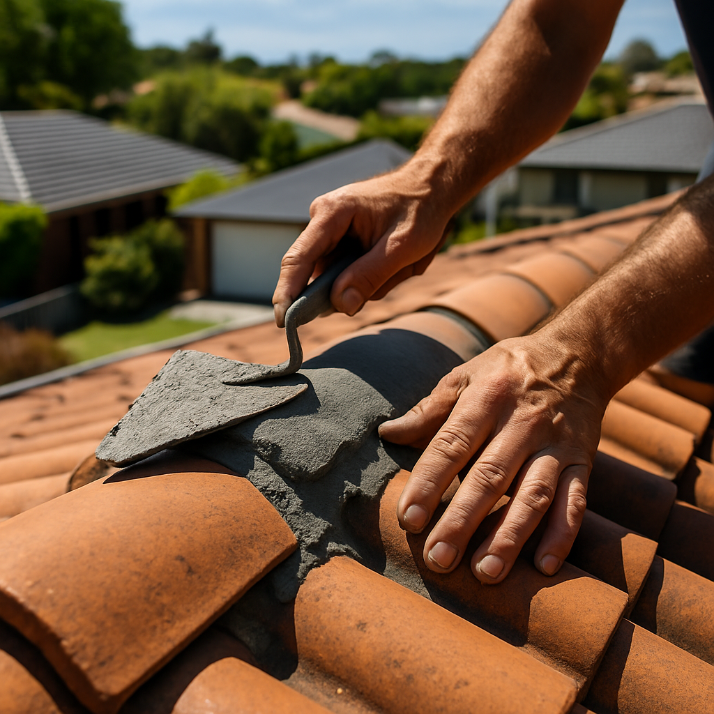

Roof restoration
Re-bedding, re-pointing, repainting and sealing for tile and Colorbond roofs that are tired but structurally sound.
- Replace broken ridge capping & valleys
- Flexible pointing in matched colour
- Two-coat premium membrane respray
- 10-year written workmanship guarantee